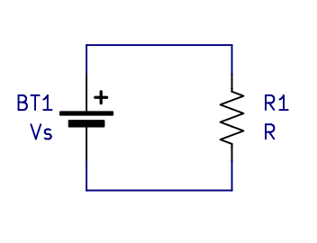
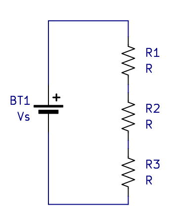
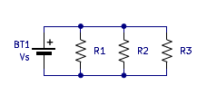

Okay, so there are two important parameters in circuits: voltage and current. Also, materials have resistance which impedes the flow of current. Additionally, everyone breaks circuits into components because it is way easier that way. Now, we will start looking into the different types of components, component combinations, and their behaviors. This is basically what electronics theory or circuit theory is.
Voltage SourcesThe two components necessary to make the most basic circuit possible is a voltage source and a resistor. A voltage source is a component that maintains a constant voltage across its terminals. Additionally, it will source energy/power to the circuit. The ubiquitous real life example of a voltage source is a battery (9V, AA, AAA, etc). Ideally, a voltage source should maintain a constant voltage across its terminals no matter the current through it or other varying conditions. In reality, there are limitations which must be accounted for.
ResistorA resistor is a component with a constant resistance. It takes work to make current flow through a resistor and the result of this is it dissipates power and heats up. Ideally, a resistor should maintain a constant resistance no matter the power it is dissipating. In reality, resistors will have a power limit among other limitations and properties.
A Heater CircuitSo now that I have introduced voltage sources and resistors I can make the most basic circuit imaginable, a heater. Below you see a voltage source connected across a resistor.
A heater is the true hello world circuit for electronics. (Interestingly, writing a hello world program on a computer also makes a heater, just with extra steps)
Because there is a voltage across the resistor, current flows through the circuit and the resistor dissipates power and heats up. The first thing to note is that the current must be the same everywhere in the circuit. Remember that current is essentially the flow of charge; how could a quantity of flow be different if there is only one flow path? It can't be. The next thing to realize is that the voltage across the resistor is the same as the voltage across the voltage source. The voltage source maintains a constant voltage. The previous two ideas are generalized and stated slightly more formally later.
Ohms Law
To calculate the current through the resistor in the heater circuit we must use ohms law.
Ohms law relates the voltage across a resistor to the current through it. The most common
equation for ohms law is given below:
V = IR
Rearranging this equation also leads to two other ways to express ohms law.
R = V/I
I = V/R
These equations also demonstrate what a resistor is in a better sense. A resistor is a component
that creates voltage across it that is proportional to the current through it. And in the
opposite sense, the current through a resistor is linearly proportional to the voltage
across it. We can also use the I=V/R version of the equation to calculate the current in our
heater circuit.
It should also be noted that ohms law is not a real law. This is because ohms law only works for
resistors. That is, components that are made out of constantly resistive or ohmic material. Many materials,
for example semiconductors, are not ohmic, so they do not obey ohms law.
We also want to calculate the power dissipated in the resistor in the heater circuit. For this we
must use the electric power equation which is given below:
P = IV
The derivation of this equation is pretty strait forward. We simply combine the definition of voltage,
energy per unit charge; the definition of power, energy transfer per unit time; and the definition of
current, charge per unit time.
V = E/q -> E=Vq
I = q/t
P = E/t
P = Vq/t
P = VI
Okay, so we know the voltage across the resistor and we calculated the current through it using ohms
law. We can now calculate the power using the power equation. It is also worth noting that the power
dissipated by the resistor is equal to the power supplied to the circuit by the voltage source. Aka conservation
of energy. There is technically also a sign convention to this, but you only really need to know it
for certain derivations, not practical electronics work.
One last thing. You can combine ohms law and the power equation into the following formulas to
avoid doing unnecessary math.
P = V^2/R
P = I^2*R
Next let's look at the series resistor circuit shown below.

For the same reason as the single resistor circuit,
the current will be the same through all the resistors and the voltage source. Additionally, the voltage across
all the resistors will be equal to the voltage across the voltage source. Let's put this into math form and
solve it.
Vr1 + Vr2 + Vr3 = Vs
I*R1 + I*R2 + I*R3 = VS
I(R1 + R2 + R3) = Vs
Vs/I = R1 + R2 + R3
Rtotal = R1 + R2 + R3
We can reduce the series resistors into an equivalent resistance which is equal to the sum of
individual resistors. This is helpful to find out stuff about the circuit. We can reduce the three
resistors into one resistor by adding them up. We can then solve for the current using the source voltage and the
equivalent resistance. Once we know the current, we can expand the circuit back out and find the voltage across
any individual resistor using ohms law again.
The next case to look at is a parallel resistor circuit.

Unlike the two circuits that we have looked at so far, the current in this circuit is not the same everywhere.
It is easy to find the current in each of the resistors as it is simply equal to Vs/Rx. Where
Rx is the resistor value of one of the resistors. Additionally, we know that the current through the voltage source must
be the sum of all the individual resistor currents. Again, think of current as a flow, the
flow must leave the voltage source, split into three paths, then converge again. And the
magnitude of the converged flow must be equal to the magnitude of the original flow. Let's put
this into equation form to figure out how to reduce the parallel resistors. That is, the resistor
that sets the same current as all the parallel resistors would.
Vs/R1 + Vs/R2 + Vs/R3 = Vs/Req = Isum
1/R1 + 1/R2 + 1/R3 = 1/Req
Req = 1/(1/R1 + 1/R2 + 1/R3)
We see that the reciprocal of the parallel resistance is equal to the sum of the reciprocals of
the individual resistors.
In all the circuits shown so far we have components connected by lines. The lines represent wires and are assumed to be zero resistance. This is often approximately true in real life circuits. Anyway, we call a connection of two or more components by these wires a node.
Kirchhoff's Current LawThis has already been discussed implicitly. Basically, the current into any node is equal to the current out. One of the results of this is the current through any series circuit will always be equal. There is a more mathematical sign convention definition of this if you want.
Kirchhoff's Voltage LawThis has also already been discussed implicitly. This basically says the voltage rise is equal to voltage drop in a circuit. Less generally, the voltage across your voltage source(s) is the same as the voltage across your other components. A more mathematical sign convention definition exists.
Back Next